The aim of this android app is to inform about the bus and trolley lines of Athens and the expected vehicle arrivals at the stops.
The application is developed by GiannisClipper, written in React Native and powered by OASA telematics API.
It is an independent initiative, not associated with transportation organization of Athens (OASA), for the purpose of practicing and demonstrating programming skills.
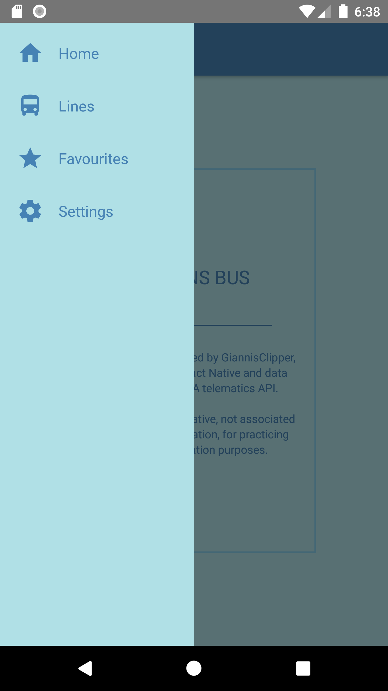
The main menu of the app has the following choices:
The 'Home' choice that displays the initial screen with a small introductory text.
The 'Lines' choice that displays a screen with the bus lines and navigates to following screens with detailed information for each of the routes and stops.
The 'Favourites' choice that displays a screen with stops and routes defined as favourites by the user and carries out instant access to their detailed information.
The 'Settings' choice that displays a screen with settings or tasks relevants to the functionality of the application.
Furthermore, the name of each choice ('Home', 'Lines', 'Favourites', 'Settings') is displayed as the main title at the top of the related screen.
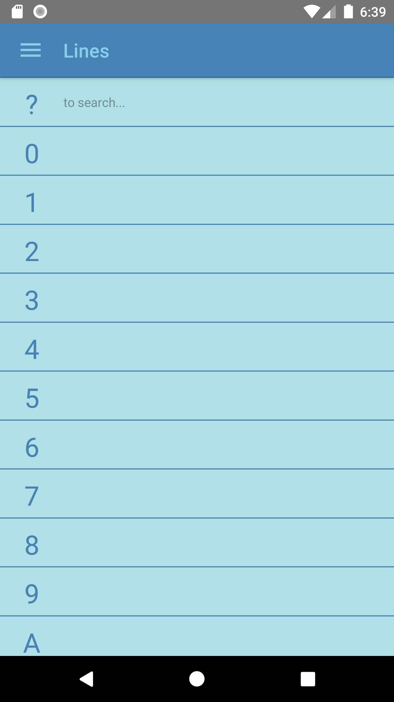
On the lines screen, they displayed in groups according to the first digit of their line ID or according to the search user does by typing a part of the line IDs or descriptions.
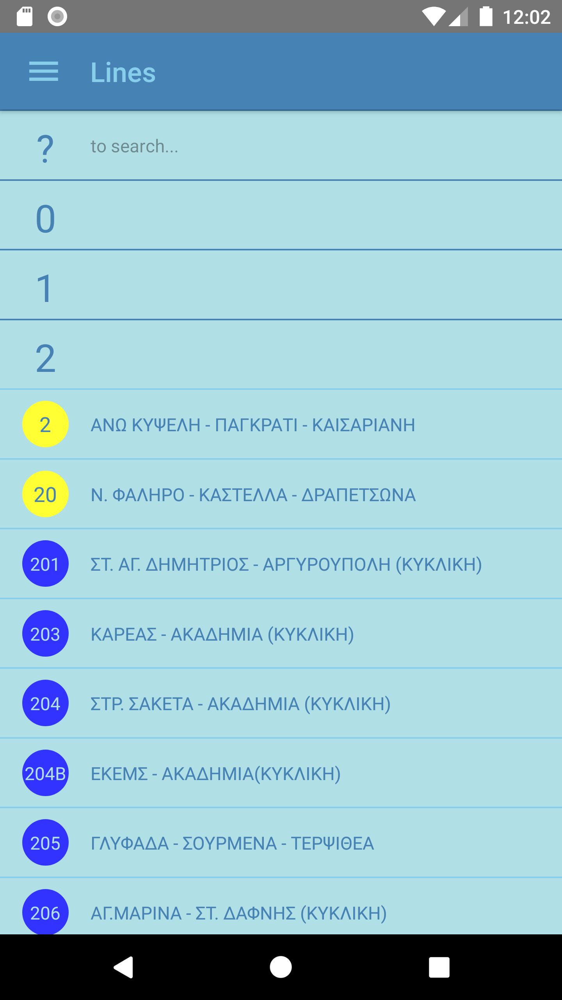
Each line is represented by an ID and a description, the blue color around the ID declares the bus lines while the yellow the trolley lines.
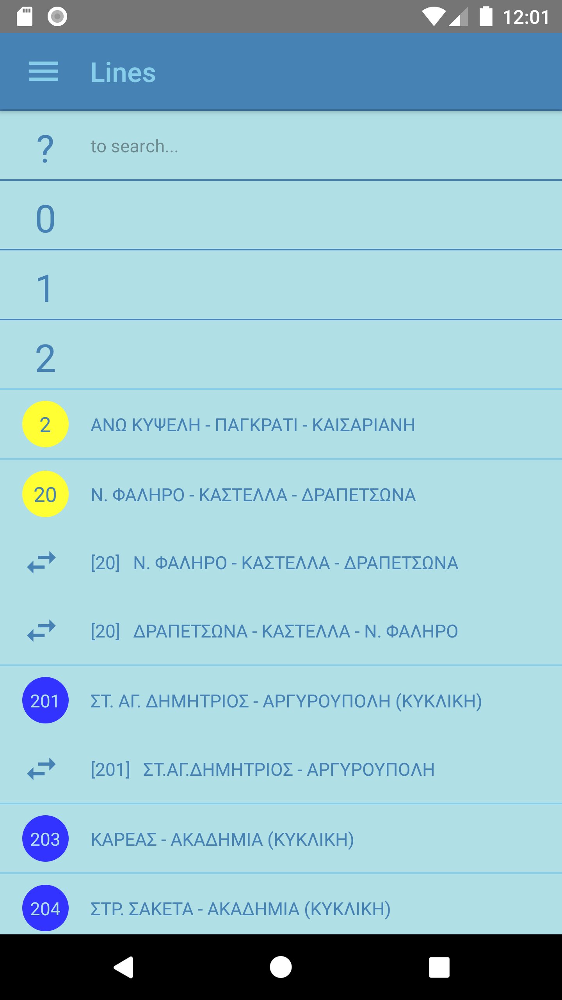
The user can display the routes of each line. Μost of the lines have two routes (one per direction, one 'going' and one 'coming'), while cyclic lines have usually just one. However it happens to be some differentiated routes for specific days or hours.
Subsequently the user can select any of them and navigate to a next screen with detailed information about the selected route.
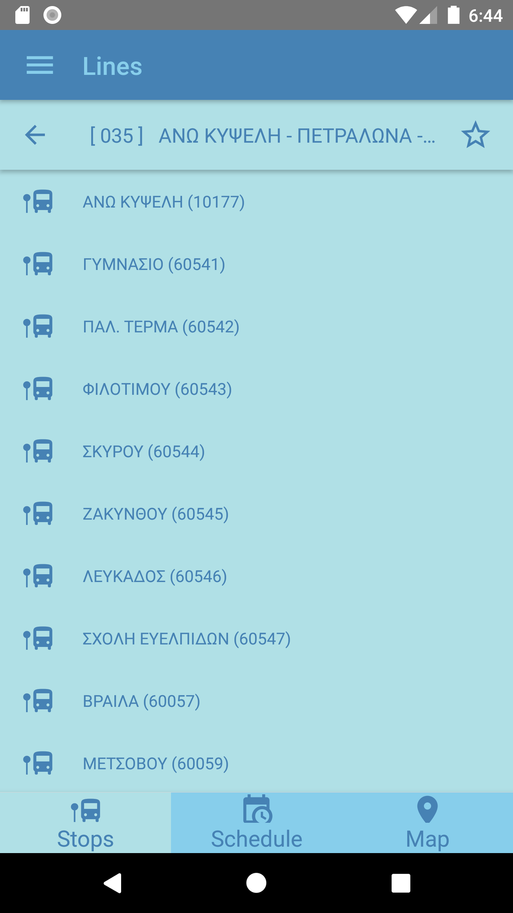
On the screen with the detailed information of the route, the ID and the description of the route are displayed at the top as a second title. On the right side of this title, there is an icon (arrow) that navigates to the previous screen. On the left side, there is an icon (star) that can be used by the user to select or deselect the current route as favourite.
Below that title, there is a list with the stops of the route where each stop is represented by a name and a code number. The user can select any of the them and navigate to a next screen with detailed information about the selected stop.
Also available on this screen, is the schedule of the route as well as an illustration of the route on the map.
The navigation between the available information is carried out throught the icons at the bottom of the screen.
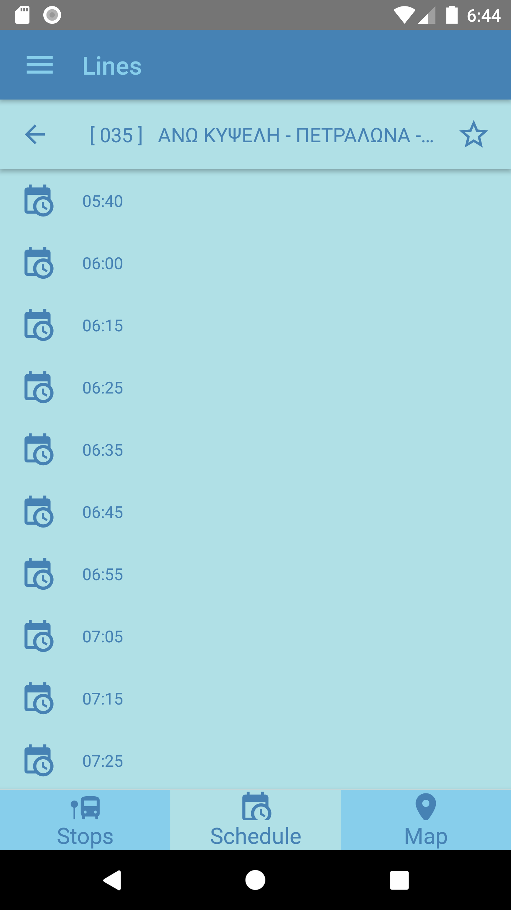
The schedule of the route includes all the departure times from the starting point during the current day.
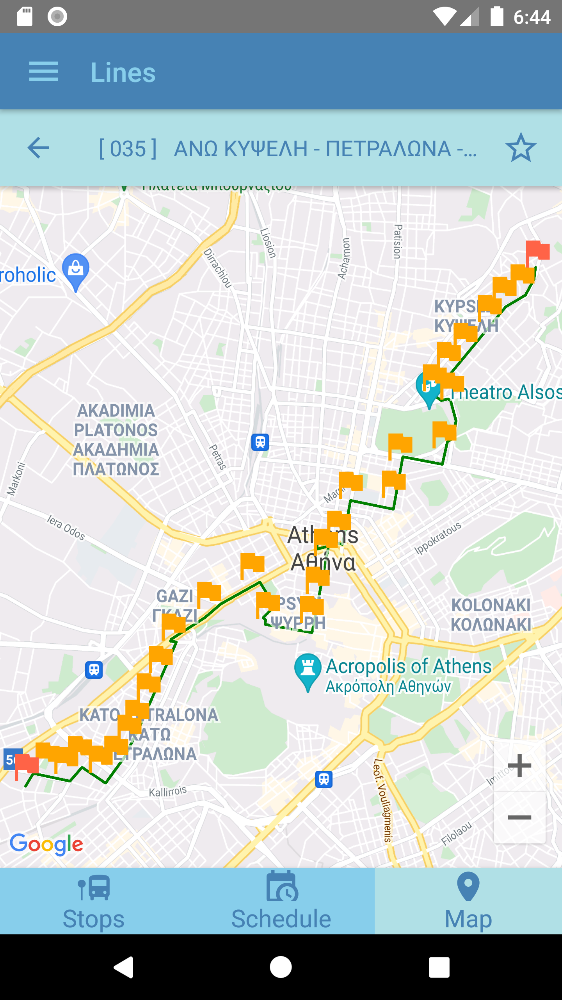
In the route illustration on the map (google maps), red symbols are used to mark down the terminal stops, orange ones to mark down all the other stops in between and a green line to show the roads where the route passing through.
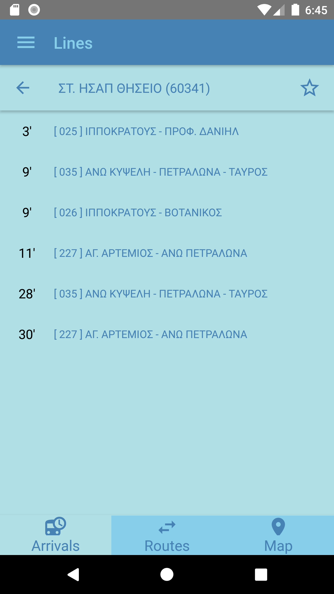
On the screen with the detailed information of the stop, the name and the code number of the stop are displayed at the top as a second title. On the right side of this title, there is an icon (arrow) that navigates to the previous screen. On the left side, there is an icon (star) that can be used by the user to select or deselect the current stop as favourite.
Below that title, there is a list with the expected arrivals at the stop, with the estimated waiting times and the routes that are serviced by the expected vehicles. This list is automatically updated every 20 seconds.
Also available on this screen, is a list with all the routes that are passing through this stop as well as an illustration of the place of the stop on the map.
The navigation between the available information is carried out throught the icons at the bottom of the screen.
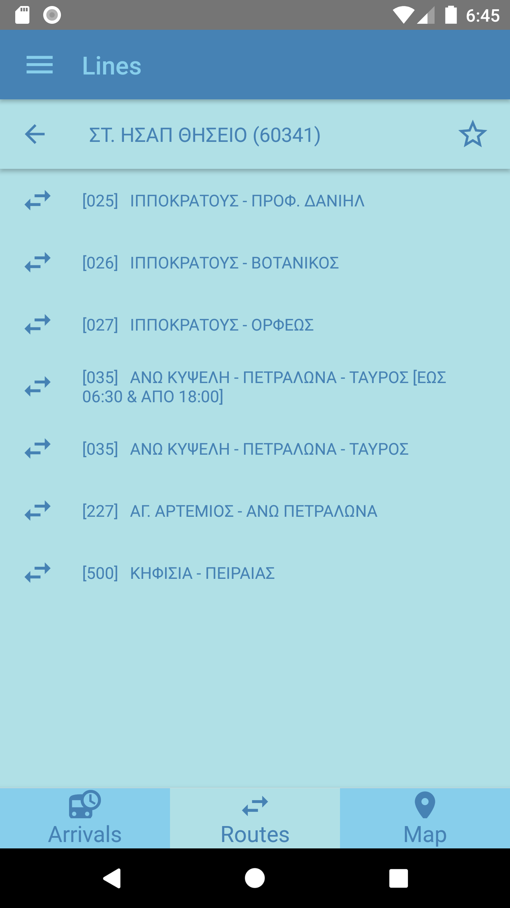
In the list with all the routes that are passing through the stop, the user can select any of the them and navigate to the corresponding screen with the detailed information about the selected route.
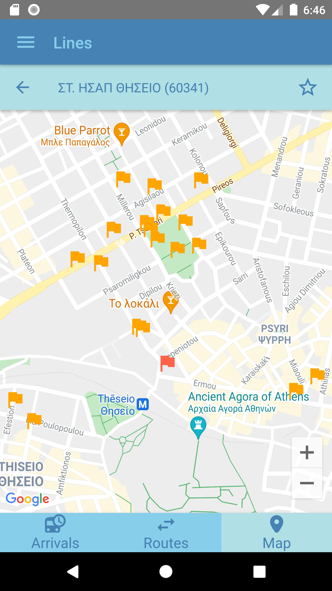
In the stop illustration on the map (google maps), the current stop is marked down with a red symbol while orange symbols are used to show other stops placed close to it.

On the screen with the favourites defined by the user, is displayed at first a list with the favourite stops while is available a similar one with the favourite routes. The switching between list views is carried out throught the icons at the bottom of the screen.
The user can select any of the favourite stops or routes and have instant access to the corresponding screens with the detailed information about the selected stop or route.
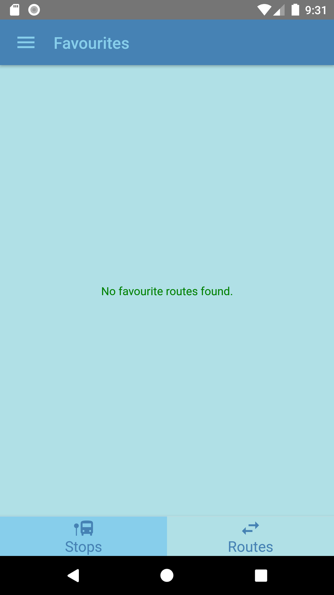
In case there are no favourite stops or routes defined by the user, it will simply displayed a relevant message.
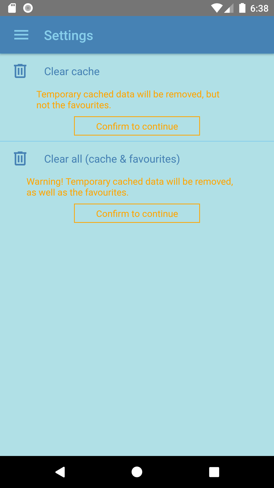
On the screen with settings or tasks relevants to the functionality of the application, there are two options to clear memory which rarely may be a reason to be used.
The first one is about to clear the temporary memory (cache) which is used to reduce Internet traffic (api requests) and to optimize the performance of the application. This memory is automatically cleared and refreshed on a 24 hour basis.
Τhe second is about to clear the total memory, the temporary memory (cache) as well as the favourites defined by the user.
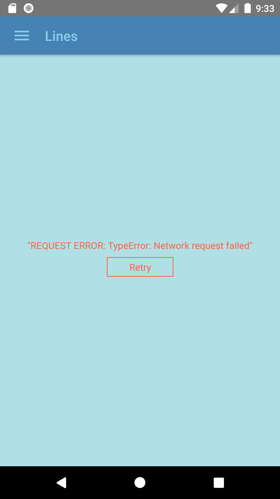
By any chance of failure during the process of getting data from Internet, application displays a relevant error message and gives the option to repeat the process.